Desa Klepek, Kecamatan Kunjang, Kabupaten Kediri
Koperasi milik warga untuk menyediakan kebutuhan petani, menjual hasil tani dengan harga yang layak, dan membagi barang bersubsidi secara adil. Gesek jam di bawah untuk melihat satu hari di teras koperasi.
Barang bersubsidi dijual sesuai HET atau harga acuan pemerintah. Angka di bawah berasal dari laporan pembukaan serentak KDKMP pada 15 Oktober 2026. Harga final dan stok di gerai Klepek bisa berbeda, jadi konfirmasi langsung di gerai.
Hemat dihitung dari harga warung yang dilaporkan di daerah lain (LPG Rp20.000, MinyaKita Rp18.000), jadi hanya perkiraan.
Ketuk produk untuk memasukkannya ke keranjang merah. Harga menyusul, dikonfirmasi admin sebelum pembayaran.
Harga dan stok: tanyakan di gerai. Daftar berasal dari data barang gerai dan bisa berubah.
Sumber: Periskop, Channel9, Marketing.co.id, Detik (Blok M).
Voucher dibagikan langsung oleh pengurus kepada warga sesuai giliran RT/RW. Bentuk voucher sengaja tidak ditampilkan di sini untuk mencegah penggandaan.
| Jenis pupuk | Kemasan | Per kg | Per sak |
|---|---|---|---|
| NPK Kakao | 50 kg | Rp2.640 | Rp132.000 |
| SP-36 | 50 kg | Rp2.400 | Rp120.000 |
| NPK Phonska | 50 kg | Rp1.840 | Rp92.000 |
| Urea | 50 kg | Rp1.800 | Rp90.000 |
| ZA (khusus tebu) | 50 kg | Rp1.360 | Rp68.000 |
| Organik Petroganik | 40 kg | Rp640 | Rp25.600 |
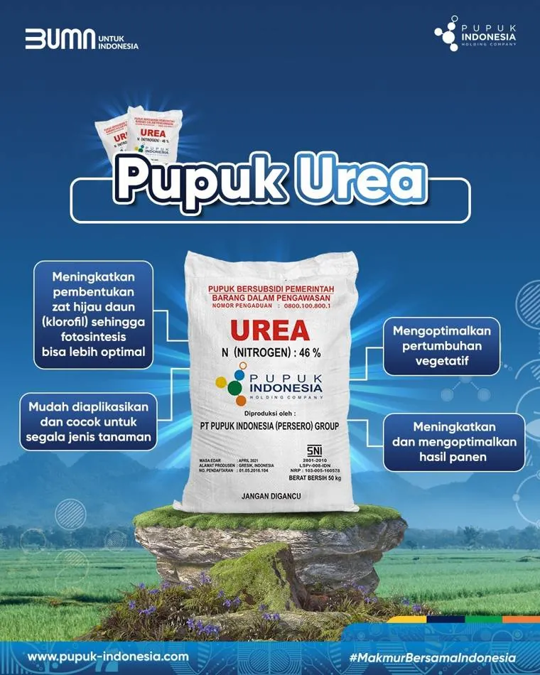
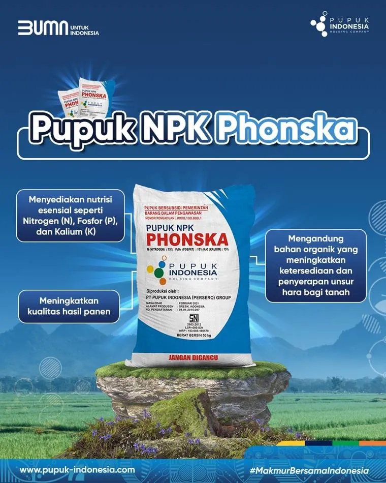
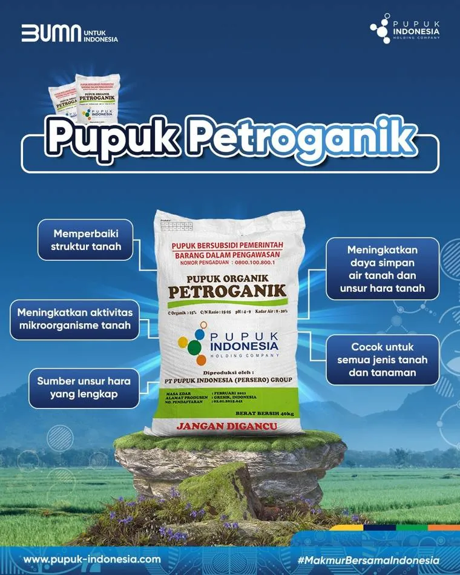
Sumber gambar: PT Pupuk Indonesia (pupuk-indonesia.com). Ketuk gambar untuk memperbesar.
Menemukan kios yang menjual di atas HET atau menyalahi aturan penyaluran? Hubungi layanan pelanggan:
Sumber: poster PT Pupuk Indonesia dan Kementerian Pertanian (Kepmentan No. 1359/Kpts./HK.150/M/12/2025 dan No. 1360/Kpts./SR.310/M/12/2025). Dokumen penebusan mengacu pada Kepdirjen PSP No. 36 Tahun 2026. Angka HET urea, NPK, NPK kakao, ZA, dan organik sesuai laporan Bisnis.com dan Jawa Pos.
Kuota LPG subsidi terbatas, jadi pembagiannya perlu adil.
KDKMP melayani penebusan pupuk subsidi bagi petani yang terdaftar di aplikasi iPubers (e-RDKK). Kuotanya terbatas, jadi yang dijaga adalah:
Jadwal dan aturan teknis pembagian pupuk dan LPG: segera hadir, setelah mekanismenya dikonfirmasi pihak berwenang.
Sumber: Katadata (LPG); JawaPos (pupuk).
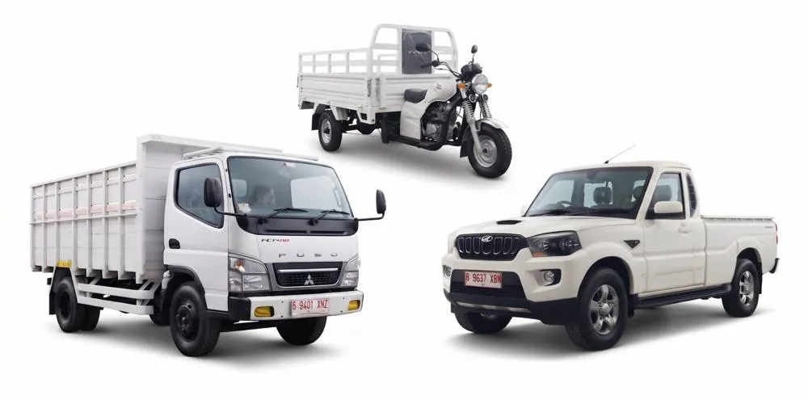
Merek unit di Klepek mengikuti kiriman Agrinas. Sumber: Detik (Mahindra, Tata), JawaPos (Hino, Mahindra, New Karya), Detik (Fuso, Isuzu, Hino, Foton).
Biaya sopir dan bahan bakar adalah asumsi simulasi yang bisa Anda ubah. Pemesanan dikonfirmasi admin koperasi.
Bandingkan harga beli yang ditawarkan dengan harga acuan. Angka acuan berubah-ubah, jadi cek yang terbaru.
Pembeli yang membutuhkan gabah atau hasil tani dari Klepek bisa memesan lewat WhatsApp. Koperasi mengumpulkan pasokan dari petani anggota.
Nomor HP tidak ditampilkan. Pembeli menghubungi lewat koperasi, dan pengurus memeriksa penawaran sebelum tampil.
Acuan: HPP gabah kering panen Rp6.500/kg dan rata-rata harga petani sekitar Rp7.000/kg pada Juli 2026 (Bapanas).
Pengumuman terbuka untuk semua warga: jadwal pupuk, giliran LPG, harga, dan ringkasan keuangan. Isinya diperbarui pengurus.
Kabar yang ingin saya terima
Angka diisi pengurus dari catatan penyaluran dan bisa berbeda dari sistem resmi. Acuan resmi: e-RDKK/iPubers untuk pupuk, Pertamina dan pangkalan untuk LPG. Menemukan selisih? Laporkan ke pengawas.
Semua barang yang dijual di koperasi mengikuti HET pemerintah.
Selisih = pemasukan dikurangi pengeluaran dalam bulan itu. Ini bukan laba bersih resmi.
Ilustrasi: halaman gerai
Ilustrasi: warga di teras
Ilustrasi: logo dan gudang
Foto asli teras, armada, dan kegiatan petani Klepek: segera hadir.
Isi data singkat. Tidak perlu NIK. Petugas koperasi akan menghubungi untuk langkah berikutnya.
Besaran simpanan pokok dan wajib: segera hadir.
Koperasi milik warga desa yang menyediakan kebutuhan sehari-hari, melayani petani, dan menyalurkan barang bersubsidi. Pemerintah mengarahkan tujuh unit usaha, dan tiap desa boleh menyesuaikan dengan potensinya.
Persiapan mulai 07.00, gerai buka 08.00–17.00, dan angkringan UMKM di teras buka sampai 24.00.
Ya. Pembelian LPG subsidi dicatat dengan KTP sesuai ketentuan Pertamina. Bawa juga voucher RT/RW dan tabung kosong. Harganya dilaporkan Rp16.000 per tabung di gerai KDKMP.
Petani terdaftar di e-RDKK membawa KTP asli, berfoto di kios lewat aplikasi iPubers, dan menandatangani nota. Harganya sesuai HET.
Syarat dan besaran simpanan pokok serta wajib ditetapkan dalam AD/ART dan akan diumumkan. Untuk sementara, isi formulir minat di bagian Jadi anggota.
Belum. Penyewaan dibuka setelah ketentuan penggunaan aset kendaraan jelas. Anda sudah bisa mencoba simulasi tarif di bagian Sewa armada.
Tulis di bagian Aspirasi warga dan pilih “Pengaduan (ke pengawas)”.
Bisa. Masukkan barang ke keranjang di bagian Yang dijual di gerai, lalu kirim pesanan lewat WhatsApp. Setelah harga dikonfirmasi dan pembayaran selesai, barang diantar ke depan rumah, paling lama 30 menit. LPG 3 kg tetap memerlukan voucher dan KTP asli.
Tulis usul atau masukan untuk koperasi. Usul dikirim ke pengurus lewat WhatsApp, dan usul yang disetujui tampil di papan di samping supaya semua warga bisa melihat serta mengetahui tanggapannya.
Belum ada usul tersimpan.
Instansi dan perusahaan yang berperan dalam program KDKMP.
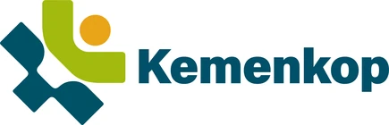
Pembina program koperasi desa
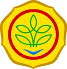
HET pupuk dan e-RDKK
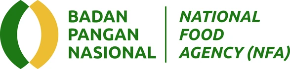
Harga acuan pangan
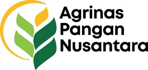
Operasional dan pengadaan aset KDKMP
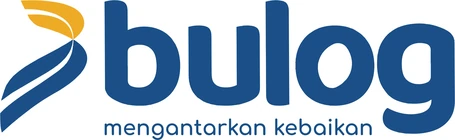
Beras SPHP dan serapan gabah
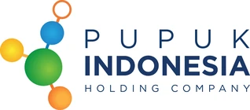
Pupuk bersubsidi
LPG 3 kg bersubsidi
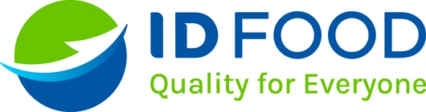
BUMN klaster pangan
Daftar ini menunjukkan peran mereka dalam program KDKMP, bukan kerja sama atau dukungan resmi terhadap situs ini.
Rujukan program, susunan pengurus, komitmen, istilah, dan simulasi. Kembali ke beranda
Klepek adalah permukiman desa agraris dengan persawahan dan lahan perkebunan.
Luas desa 1,83 km² pada ketinggian sekitar 58 meter di atas permukaan laut.
Petani Klepek pernah mendapat penyuluhan penyimpanan benih kacang panjang (Universitas Kadiri, 2019).
Dusun Banengan menjadi lokasi UKM tahu yang sudah berdiri sekitar 20 tahun.
Harga Pembelian Pemerintah (HPP) gabah kering panen di tingkat petani Rp6.500/kg, dan Bulog menyerap semua kualitas pada harga ini. Pada Juli 2026, Badan Pangan Nasional mencatat rata-rata harga gabah petani sekitar Rp7.000/kg, di atas HPP. Harga ini berubah-ubah, jadi cek angka terbaru sebelum bertransaksi.
Sumber: jurnal Universitas Kadiri dan kajian pengabdian masyarakat di Desa Klepek; Antara, 17 Juli 2026; Kontan.
Koperasi Desa/Kelurahan Merah Putih (KDMP/KKMP) lahir dari Instruksi Presiden Nomor 9 Tahun 2025 yang ditandatangani pada 27 Maret 2025. Kelembagaan 80.081 koperasi diluncurkan secara nasional pada 21 Juli 2025 di Klaten, Jawa Tengah. Tata kelolanya diatur lebih lanjut dalam Perpres Nomor 82 Tahun 2026 (111 pasal) yang ditandatangani 23 September 2026, dan pemerintah mengarahkan penyaluran barang subsidi seperti pupuk dan LPG 3 kg lewat KDKMP.
Ilustrasi rancangan gerai KDKMP.
Kebutuhan pokok warga.
Obat dengan harga terjangkau.
Layanan kesehatan dasar.
Pusat administrasi dan pelayanan anggota.
Alternatif pinjaman tanpa bunga tinggi dari pinjol atau lembaga ilegal.
Penyimpanan hasil pertanian.
Distribusi barang dan hasil tani.
Unit usaha boleh disesuaikan dengan potensi tiap desa, dan itulah ruang bagi gagasan Klepek di bawah. Sumber: Inpres 9/2025, Kementerian Koperasi, pemberitaan Tirto, JawaPos, dan Antara.
Gagasan pengurus dijalankan bertahap. Urutannya mengikuti kepastian aturan, bukan seberapa menarik idenya.
LPG 3 kg, pupuk subsidi, sembako. Margin tipis, tetapi inilah yang membuat warga datang dan membangun kepercayaan.
Saprotan dengan stok terbatas, dan sewa armada setelah izin jelas.
Hasil tani sistem pre-order, odong-odong, dan angkringan di teras setelah status tanah dan izin Kepala Desa jelas.
Pilih satu gagasan untuk melihat rinciannya.
Manajer KDKMP Desa Klepek
Karyawan gerai retail KDKMP Klepek
Alasan penghargaan: Penghargaan diberikan atas ketabahan luar biasa dalam mengelola pra operasional koperasi sekaligus menampung amarah tentang aspirasi yang tak kunjung direalisasikan oleh pusat.
Periode 2025–2030
Ketua
Wakil Ketua Bidang Usaha
Wakil Ketua Bidang Anggota
Sekretaris
Bendahara
Ketua Pengawas
Anggota Pengawas
Anggota Pengawas
Janji koperasi untuk warga Klepek. Setelah disetujui rapat pengurus, label draf dicabut.
Setiap barang bersubsidi yang dijual di koperasi mengikuti HET pemerintah. Contohnya LPG 3 kg Rp16.000 per tabung.
Hasil tani dibeli langsung dari petani. Harga beli diumumkan terbuka dan tidak di bawah harga acuan pemerintah.
Petani terdaftar e-RDKK cukup membawa KTP. Stok yang masuk dan antrean diumumkan terbuka.
Penjualan dicatat sesuai ketentuan Pertamina. Jadwal kedatangan dan stok tabung diumumkan agar tidak berebut.
Tarif dan rincian biaya sewa armada ditampilkan sebelum warga memesan, setelah ketentuan penggunaan aset jelas.
Persiapan mulai 07.00, gerai buka 08.00–17.00, dan angkringan UMKM warga buka sampai 24.00 dengan aturan kebersihan dan jam tutup.
Tiap unit usaha dicatat sendiri dan semua uang masuk ke rekening koperasi, bukan rekening pribadi.
Pengurus, perangkat desa, dan kerabat mereka mendapat harga dan giliran yang sama dengan warga lain.
Harga, stok, dan ringkasan keuangan bulanan diumumkan di papan teras dan situs. Warga bisa mengadu lewat kotak saran atau langsung ke pengawas.
Penjelasan singkat supaya semua warga, bukan hanya pengurus, paham apa yang dibicarakan.
Keuntungan koperasi setelah dikurangi biaya, dibagikan kepada anggota sesuai aturan AD/ART dan keputusan Rapat Anggota. Besarnya biasanya dikaitkan dengan seberapa aktif anggota bertransaksi dan simpanannya.
Forum tertinggi koperasi. Pengurus melaporkan kegiatan dan keuangan, dan anggota ikut memutuskan arah usaha serta pembagian SHU.
e-RDKK adalah data elektronik kebutuhan pupuk subsidi tiap kelompok tani. Petani yang tidak terdaftar di sini tidak bisa menebus pupuk subsidi. Penebusan dilayani lewat aplikasi iPubers.
Poktan adalah kelompok tani, Gapoktan gabungan beberapa kelompok tani, dan PPL penyuluh pertanian lapangan yang mendampingi petani.
Harga Pembelian Pemerintah, yaitu harga acuan minimal pembelian gabah dari petani. Besarnya ditetapkan pemerintah dan bisa berubah, jadi cek angka terbarunya sebelum menetapkan harga beli.
Uji berkala kendaraan angkutan barang. Pickup dan truk koperasi perlu mengikuti ketentuan ini, dan biayanya masuk hitungan sewa.
Setoran anggota ke koperasi. Besarnya ditetapkan di AD/ART atau rapat anggota, Besarnya untuk Klepek: segera hadir.
Untuk pengurus: perkiraan pendapatan sewa armada. Tarif masih simulasi.
Memakai tarif 24 jam. Belum laba bersih: biaya tenaga kerja, BBM, pajak, dan biaya lain belum seluruhnya dihitung.